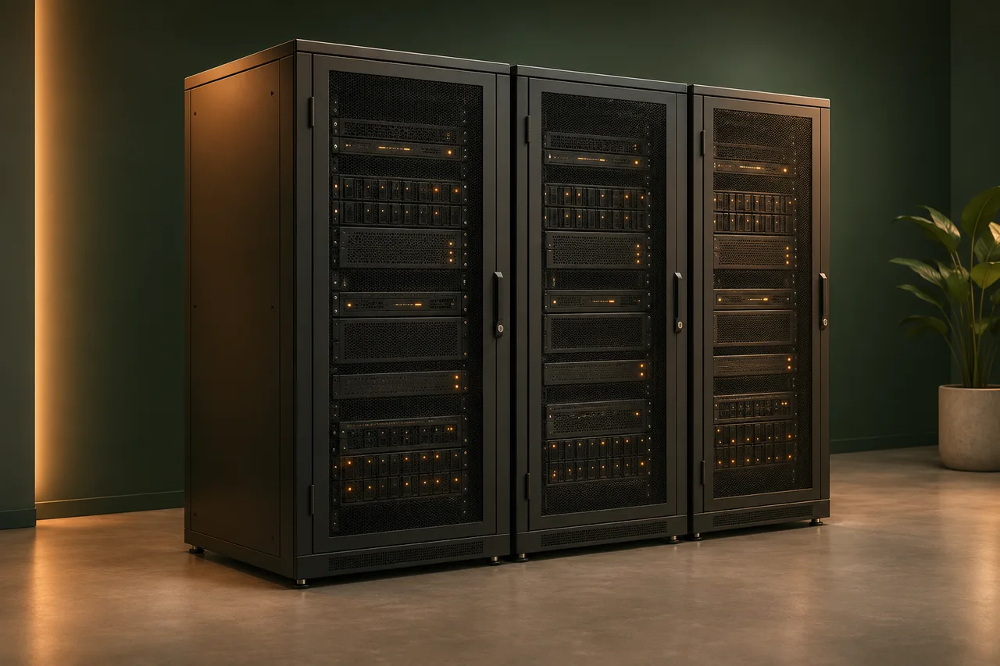

Meet your internal IT requirements.
Design the deployment around your access rules, approved data flows and change controls. Agree where workplace information is stored and which external services may process it.
Self-hosted AI Workplace
An AI workplace your organisation can run, with your knowledge, connected tools and a first colleague configured around real work.
Deploy FUSED on supported servers on your network or in your own cloud account. We can build the environment, set up the software and train your people or chosen IT provider.
Perpetual licence & deployment from $12,000.AUD ex GST · quoted to your requirements

Why self-host?
Self-hosting is a practical choice when your business wants to make the hosting decisions and has a capable team or provider to look after the system.
Design the deployment around your access rules, approved data flows and change controls. Agree where workplace information is stored and which external services may process it.
Build on suitable servers, cloud accounts and technical capability you already have. We assess what fits, what needs upgrading and how the workplace connects to your systems.
Your team or a capable provider can run the supported deployment. The perpetual licence lets you keep using the delivered version without a FUSED subscription. Optional FUSED support is available.
The licence allows unlimited users, AI colleagues and API connections within your agreed organisation. Configuration work, third-party licences and computing capacity are separate.
What you get
Start with one role and an agreed result: an enquiry followed through, a document prepared for review or a routine record updated.
Infrastructure design & build
You do not need to arrive with servers already installed. We bring cloud architecture, systems and network engineering to the deployment, working with your IT team or chosen provider to build a supported environment.
Size the compute, databases and storage around your workload. Assess AWS cloud resources or suitable on-premises infrastructure, including the Windows Server or Linux systems the deployment needs.
Design network segmentation, firewall rules and service accounts around the information each colleague needs. Keep administration separate from everyday use and make approved data flows explicit.
Make health, errors and usage visible. Agree patching, alert response and recovery responsibilities, so the workplace has an operating plan as well as a working installation.
Agreed channels, information and permissions
Coordinates the work, uses approved knowledge and skills, and applies the agreed controls.
Only through the connections and data flows agreed for your deployment. Local AI processing is assessed separately.
Engineering behind the workplace
We select the architecture for your requirements. These are areas we can scope into the infrastructure work; the supported technologies, deliverables and costs are confirmed before building.
Identity and access management (IAM), single sign-on (SSO), multi-factor authentication and least-privilege service accounts. Scope encryption and secure credential storage alongside the corporate guardrails governing what AI may do.
Infrastructure as Code (IaC), using tools such as Terraform or AWS CloudFormation where appropriate. Automated build and release pipelines (CI/CD), separate test and production environments, and a documented rollback process reduce reliance on manual setup.
Scope API connections with Microsoft 365, SharePoint, Outlook, Teams and your CRM or ERP. Define authentication, read/write permissions and what happens when a connection fails, with approvals before sensitive actions.
Central logs, health metrics and alerts, with named owners for investigation and operating-system patching. Review compute capacity, performance and usage costs; add autoscaling where the workload justifies it.
Agree backup retention and restore testing. Set a recovery point objective (RPO: how much recent data could be lost) and recovery time objective (RTO: how quickly service needs to return). These guide the recovery design and budget.
Hand over the agreed architecture and data-flow diagrams, configuration records, access responsibilities and operating runbooks. Practise routine changes and recovery steps with the people who will support the workplace.
Self-hosted does not automatically mean all AI processing stays on-site. We agree model providers, data flows and any local-processing requirements before deployment. Infrastructure and specialist integration work are quoted separately.
Setup & independent handover
The handover covers the work and the system behind it. Your operators practise the agreed tasks before acceptance, with documentation they can keep using.
Starter Discovery & Design is included in the agreed deployment setup. Define the first role, expected outputs, supported systems, data access, acceptance checks and who will operate each component. Broader workflow redesign is scoped separately.
Prepare the environment, deploy FUSED and configure the first role. Test representative work, permissions, approval steps and what happens when something fails.
Hand over configuration records, customer-specific instructions and operating notes. Practise administration, knowledge updates, routine checks and the agreed recovery steps.
Pricing & responsibilities
Choose self-hosting for the control it gives you. We make the initial scope and ongoing responsibilities clear before you commit.
Hosting and AI usage, technical upkeep and changes to the work still need a budget and an owner.
Choose who looks after the ongoing work
Both options need your business knowledge, human decisions and agreed corporate guardrails. Costs depend on workload, infrastructure and support needs; self-hosting is not a promise of lower total cost.
Choose the managed service when you want FUSED to look after the agreed operation, maintenance and improvement.
One useful conversation
Bring one recurring task or bottleneck. We’ll help define a useful result, what it needs and whether your team or FUSED should run it.